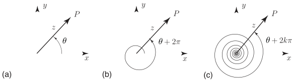

Long description: fig1

Alt text: Three diagrams illustrate the angle of a complex number, showing \(\theta\), \(\theta + 2\text{ pi}\), and \(\theta + 2\text{ k}\text{ pi}\).
This description was generated by AI and has not been verified by a human. If you spot an error, please use the feedback link below.
- Diagram (a) shows a complex number vector originating at the origin, extending into the first quadrant, labeled \(z\), forming an angle \(\theta\) with the positive real axis (\(\vec{x}\)), and the positive imaginary axis (\(\vec{y}\)) pointing vertically upward.
- Diagram (b) shows a complex number vector labeled \(z\), originating at the origin, making an angle labeled \(\theta + 2\text{ pi}\) with the positive real axis (\(\vec{x}\)), and is situated within a circle centered at the origin.
- Diagram (c) shows a complex number vector labeled \(z\), originating at the origin, making an angle labeled \(\theta + 2\text{ k}\text{ pi}\) with the positive real axis (\(\vec{x}\)), and is situated within a series of concentric circles centered at the origin.